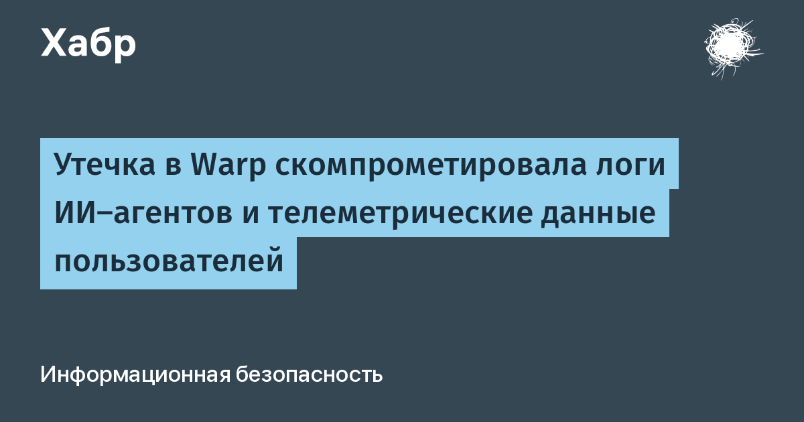

Warp — платформа, выросшая из «умного терминала» в полноценную agentic-среду разработки (ADE): ИИ-агенты там пишут код, тестируют его и разворачивают приложения. Основатель и CEO Зак Ллойд сообщил, что в пятницу компания обнаружила «целенаправленную атаку на одного из поставщиков услуг в инфраструктуре Warp». Через него утекли логи принятия решений агентами и телеметрические данные пользователей. По оценке Ллойда, задето примерно 1% аудитории — а платформой, по данным сайта проекта, пользуются не менее 800 000 разработчиков. К расследованию привлечены внешних экспертов и CrowdStrike, уведомлены правоохранительные органы; затронутые пользователи получили сообщения.
Самая тревожная деталь — метод. Ллойд описал атаку как работу «роя агентов» (agent swarm) с «весьма изощрёнными методами проникновения и повышения привилегий». То есть, судя по всему, взлом проводили не люди вручную, а автономные ИИ-агенты — и жертвой пал не рядовой сайт, а инструмент, через которого агенты пишут и разворачивают чужой код. Компания пока не уточняет, были ли в скомпрометированных данных исходники, промпты или учётные записи; отдельного поста в корпоративном блоге Warp нет — признание существует в виде публичного заявления CEO в X и общения с прессой, и это честно надо учитывать при оценке полноты картины.
Инцидент Warp следует сразу за похожей историей OpenCode: на прошлой неделе платформа для кодинга с ИИ сообщила о компрометации API-ключей у примерно 1,4% пользователей, причём часть потерпевших лишилась средств — до $1700 с человека. Общая закономерность: агентские платформы накапливают опасную смесь — журналы решений, промпты, токены и права на деплой, — а их цепочка поставок остаётся обычным IT-аутсорсом со всеми его дырами. Логи агентов — это уже не безобидная телеметрия: по ним можно восстанавливать контекст чужих проектов, а иногда и ключи доступа.
Если вы пользуетесь Warp или аналогичными агентскими платформами: отзовите и перевыпустите токены и API-ключи, к которым агенты имели доступ, проверьте историю задач агентов на необычные действия, ограничьте агентам права на деплой и платёжные профили и не оставляйте секреты в промптах и переменных окружения агента. Общее правило из этих двух недель: агенту с широкими правами нужен такой же perimeter, как живому админу, — и поставщики этого агента входят в ваш периметр безопасности, даже если их офис далеко.